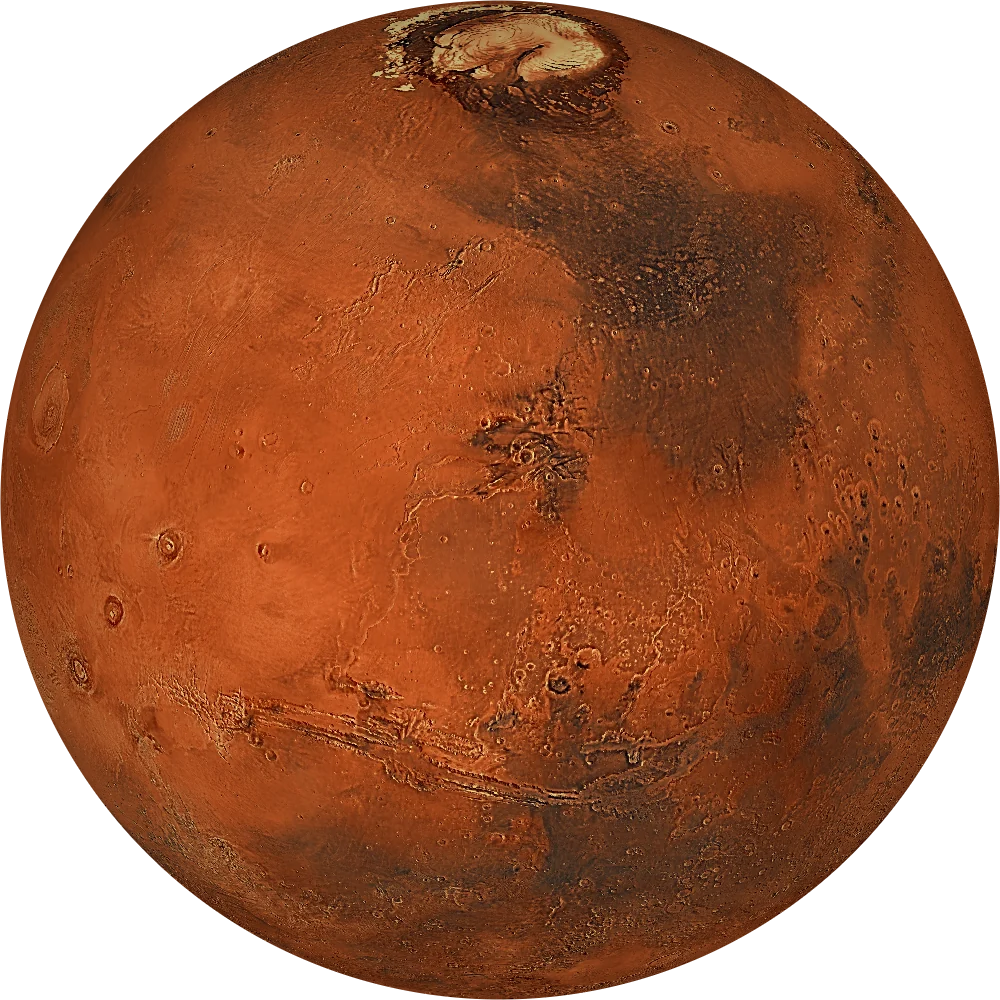

Plan a mission, or open Mars global maps to explore. Click the map to inspect a point.
Describe what you want to visit. Choose a vehicle and priority, then plan.
Shared by mission planning, weather layers and globe lighting.
Choose one planet-wide view. Add names, rover tracks and photo outlines below.
Inspect the selected area's terrain, minerals and route conditions.
Weather data and source inventory
Radiation method, assumptions and sources
Murray Lab CTX viewer and global map catalogue